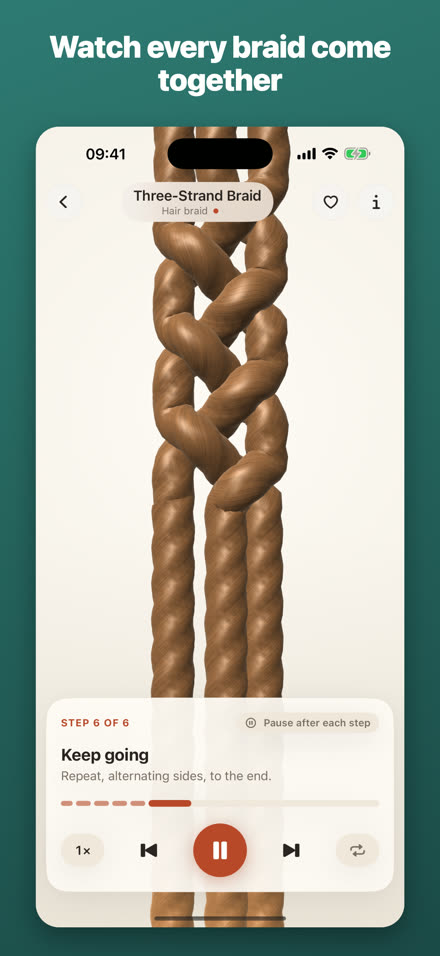
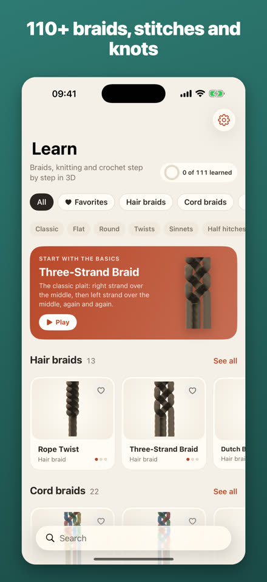
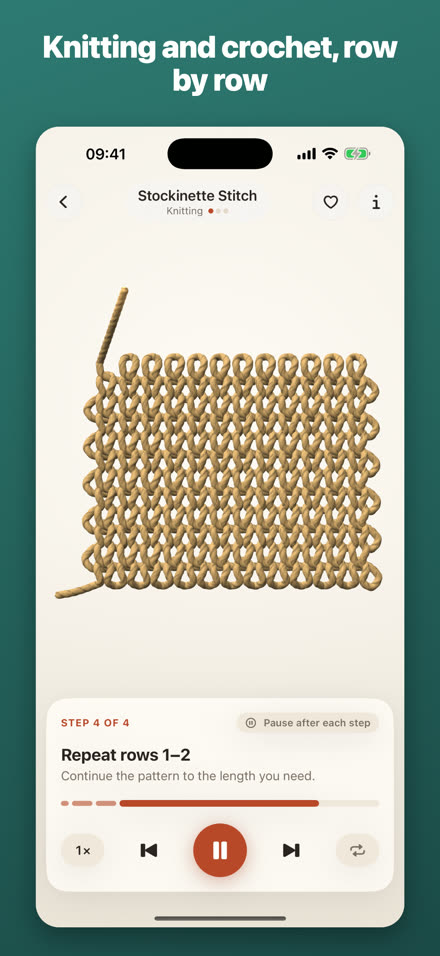
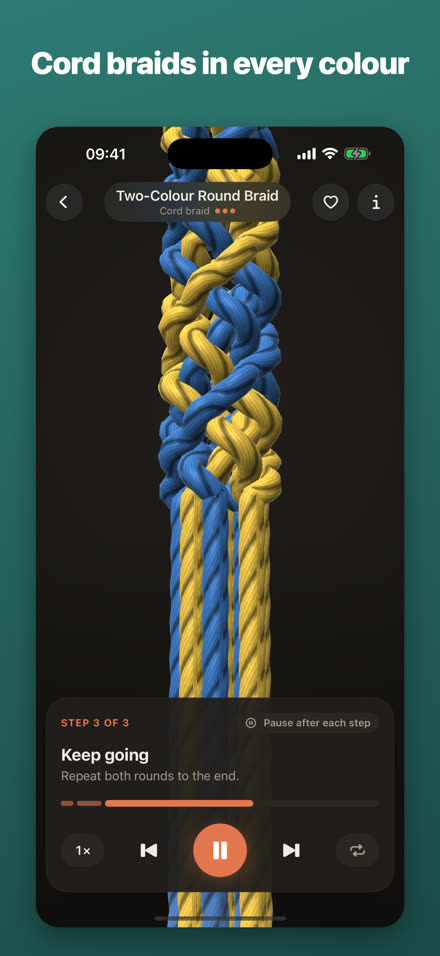
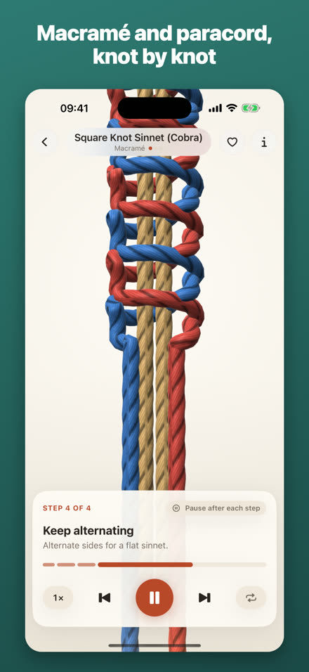

Braids, knitting, crochet and macramé in 3D.
See how each braid, stitch and knot is made, one move at a time, in 3D animations you can turn and zoom. Over 110 patterns. Works offline.





110+ patternsHair braids, cord braids, knitting textures, crochet stitches and macramé.
Row by rowClear instructions for every step or row; pause, slow down or loop.
PrivateNo account, no ads, no tracking.
20 patterns are free. Unlock all 111 with a single one-time purchase; there is no subscription.
Saç örgüsü, şiş, tığ ve makrome 3D olarak.
Her örgünün, ilmeğin ve düğümün nasıl yapıldığını hareket hareket, döndürüp yakınlaştırabileceğiniz 3D animasyonlarla görün. 110'dan fazla örgü. İnternetsiz çalışır.
110+ örgüSaç örgüleri, kordon örgüleri, şiş dokuları, tığ ilmekleri ve makrome.
Sıra sıraHer adım ya da sıra için net açıklamalar; durdurun, yavaşlatın, döngüye alın.
GizliHesap yok, reklam yok, takip yok.
20 örgü ücretsiz. Tümünü (111) tek seferlik bir satın almayla açın; abonelik yok.